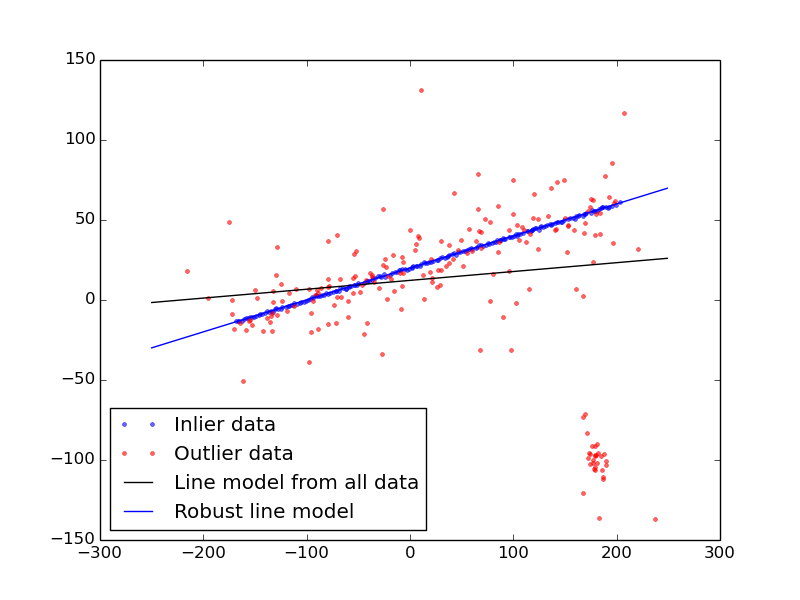

In this example we see how to robustly fit a line model to faulty data using the RANSAC algorithm.
import numpy as np
from matplotlib import pyplot as plt
from skimage.measure import LineModel, ransac
np.random.seed(seed=1)
# generate coordinates of line
x = np.arange(-200, 200)
y = 0.2 * x + 20
data = np.column_stack([x, y])
# add faulty data
faulty = np.array(30 * [(180., -100)])
faulty += 5 * np.random.normal(size=faulty.shape)
data[:faulty.shape[0]] = faulty
# add gaussian noise to coordinates
noise = np.random.normal(size=data.shape)
data += 0.5 * noise
data[::2] += 5 * noise[::2]
data[::4] += 20 * noise[::4]
# fit line using all data
model = LineModel()
model.estimate(data)
# robustly fit line only using inlier data with RANSAC algorithm
model_robust, inliers = ransac(data, LineModel, min_samples=2,
residual_threshold=1, max_trials=1000)
outliers = inliers == False
# generate coordinates of estimated models
line_x = np.arange(-250, 250)
line_y = model.predict_y(line_x)
line_y_robust = model_robust.predict_y(line_x)
plt.plot(data[inliers, 0], data[inliers, 1], '.b', alpha=0.6,
label='Inlier data')
plt.plot(data[outliers, 0], data[outliers, 1], '.r', alpha=0.6,
label='Outlier data')
plt.plot(line_x, line_y, '-k', label='Line model from all data')
plt.plot(line_x, line_y_robust, '-b', label='Robust line model')
plt.legend(loc='lower left')
plt.show()
Python source code: download (generated using skimage 0.9.0)